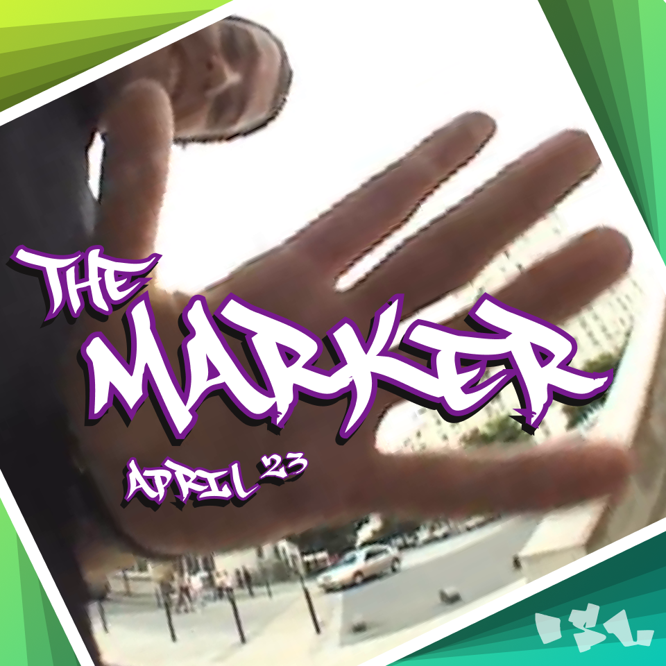

Lewes Skateboard Union
Promoting skateboard culture in Lewes, East Sussex, UK.
The Marker
A monthly round up of skate content. Check out the latest issue.
The Marker - April 2023
Upcoming skate events in Lewes
- 18th Feb 2023 - Skate Shop Day
- 21st Jun 2023 - Go Skate Day
Support your local skate scene
Skate Society BN7
Lewes’ one and only skate shop. Boycott Amazon, buy local!
The Lodge
A skater-built and run DIY indoor wooden skate park.
Lewes Skatepark
A free outdoor concrete skatepark.
Links
- Follow us on Instagram, or don’t.
- International skateboard magazine Confuzion has some articles about DIY skate spots in Lewes including the now half-demolished Skatehouse and a mystery spot by some train tracks, curious!